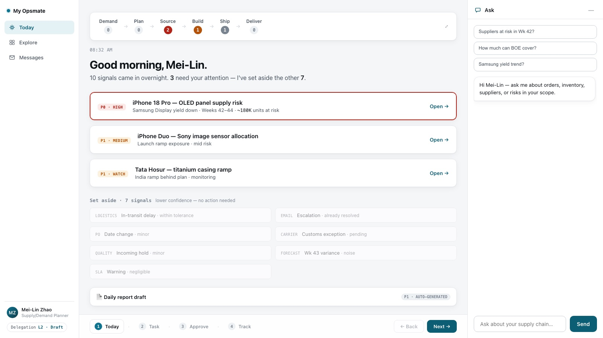
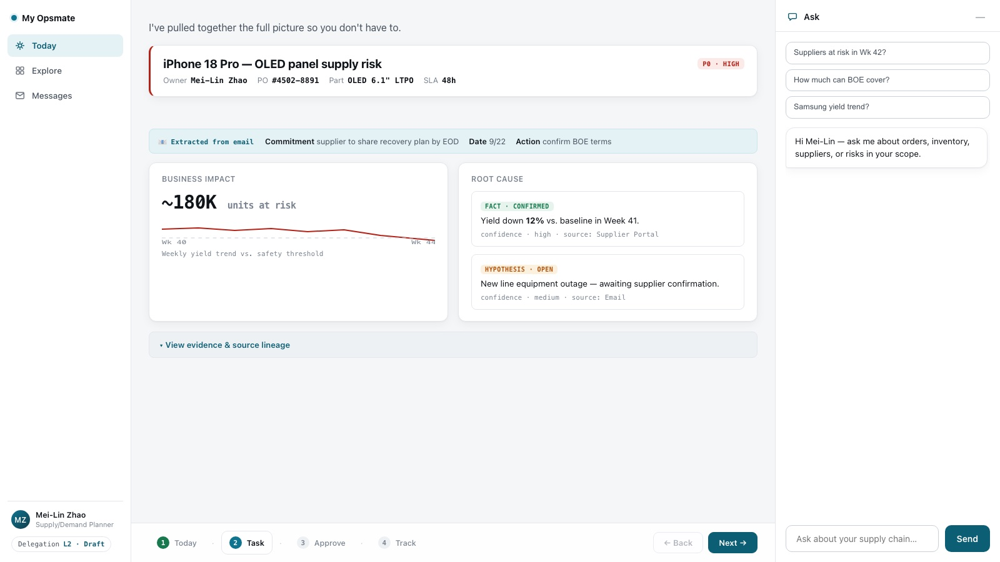
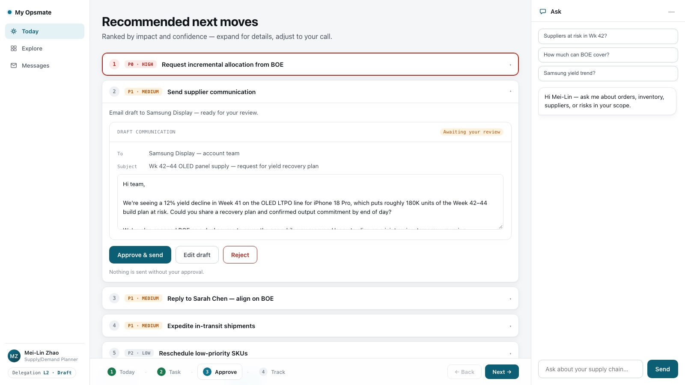
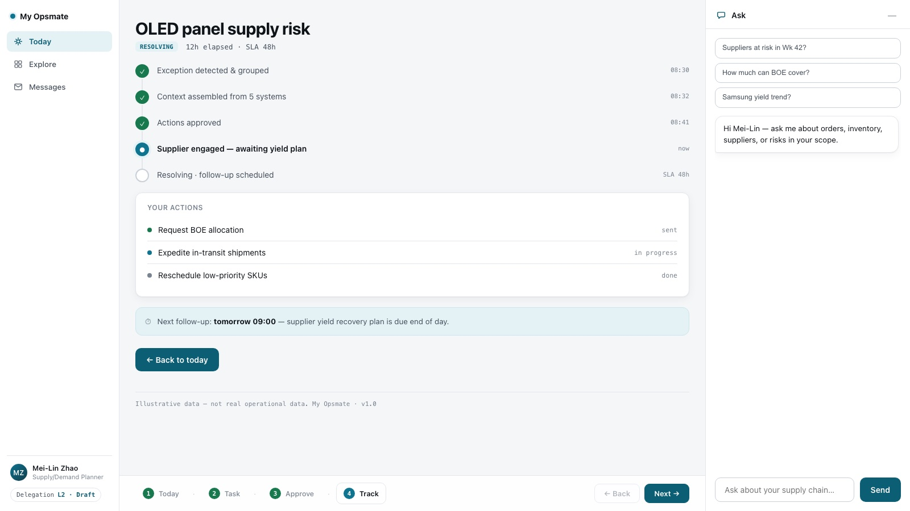

0-to-1 Product Proposal
My Opsmate
An AI teammate for supply chain operations.
How I think
A value-driven path,
not a guess.
What I have to work with
Assumption: hypothetical study — every self-set number is marked; the goal is the reasoning.
Layer on top of your existing stack — not a replacement.
Where the time goes
Seven pain points.
Two measured, five estimated.
7 symptoms, one root cause — planners are the human integration layer.
② = cited benchmark · ③ = my estimate — lengths are indicative.
Score every use case
Value × difficulty.
The matrix decides.
One exception, end to end
A short part = 50min of a planner's day.
Search + interpret + coordinate is the 64% wedge.
The wedge = Search 12min + Interpret 8min + Coordinate 12min = 32min (64%) — rebuilding context across systems, then chasing updates.
Data: the 8-step breakdown is my ③ estimate, consistent with ② McKinsey (~20% of week searching) and a planner study (2–4 h/day coordinating). 10/wk · 20 planners are stated assumptions.
160 h/wk is the floor — unresolved exceptions also mean line stoppages and expedited freight.
Prioritize
P0 now. The rest, staged.
Ordered by value × feasibility × dependency.
Translate needs into capabilities
From pain to capability.
A capability for every need.
Product shape
Four surfaces, one teammate.
Each answers one question.
Proactive by default — the teammate reaches out, so adoption isn't a chore.
The core loop
Detect → resolve → learn.
A human stays in the loop.
Automate the busywork — keep the human on judgment and approval.
Live demo · Step 1 of 4
The loop, step by step.
detect → assemble → approve → track

Step 1 · detect — the morning brief surfaces one exception, grouped and scored.
Live demo · Step 2 of 4
The loop, step by step.
detect → assemble → approve → track

Step 2 · assemble — context pulled from 5 systems into one view: impact, root cause, and source lineage.
Live demo · Step 3 of 4
The loop, step by step.
detect → assemble → approve → track

Step 3 · approve — a drafted email to the supplier; nothing sends without a human decision.
Live demo · Step 4 of 4
The loop, step by step.
detect → assemble → approve → track

Step 4 · track — a timeline of who's engaged, what's done, and the next follow-up.
MVP scope
Ship P0 + P1. Cut the rest.
A tight scope ships.
- Exception to resolution · investigate, coordinate, track
- Daily brief · proactive morning summary
- Report draft · daily report, ready to send
- BI reuse · existing dashboards, surfaced
- General-purpose chatbot
- Autonomous external communication
- Unsupervised write-back into systems
- Cross-supplier data sharing
- Ask · text-to-SQL, then RAG
- Management reports · leadership views
10-week plan
Five sprints, ten weeks.
Scrum cadence — a reviewable increment every sprint.
MVP team: 1 PM · 1 UI/UX · 3 engineers (backend · AI · frontend) · 1 embedded planner. Each sprint ends with a demo the planners can react to.
Measuring success
Four ways to know it's working.
Measured every sprint, reviewed at week 10.
- time-to-resolution ↓ — target 50min → <20min
- hours saved vs. the 160 h/wk baseline
- exceptions closed without escalation
- daily active planners
- briefs read · drafts accepted (share)
- time spent in the product
- grounding accuracy — drafts with correct facts
- draft acceptance rate
- retrieval precision
- permission errors
- write-back attempts blocked
- escalation-to-human rate
Risks & expectations
What could go wrong.
And the countermeasure.
Set expectations: this is a coordination reducer, not an autopilot that replaces human judgment.
The path, end to end
From 7 pains to a
10-week teammate.
The biggest, most buildable wedge is exception-to-resolution — an AI teammate that rebuilds context and drafts coordination, with a human approving.
Thank you.
Questions, tradeoffs, and next steps.